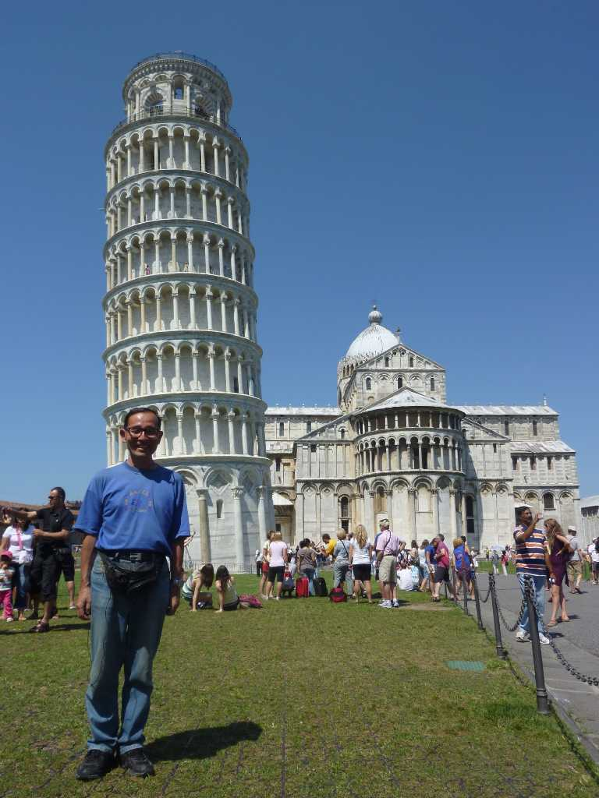

Torre di Pisa
ピサ大聖堂の鐘楼 傾斜角５度で南側の土質が軟らかく１１７３年に着工したが建設途中から傾き初め中段から修正をして１３７２年に当初の予定１００mを断念し５５mで完成した

June 27 2011 Piazza del Duomo Pisa
ピサのドゥオモ広場は１１世紀に大聖堂が１２世紀に洗礼堂と鐘楼が建設されロマネスク様式の列柱とアーチで装飾され奇跡の広場とも云われている ピサは１１世紀に淡水の良港により海運国家として発展しヴェネチア共和国等とともに４大海運国家になり地中海の海運商人と海軍で栄えた